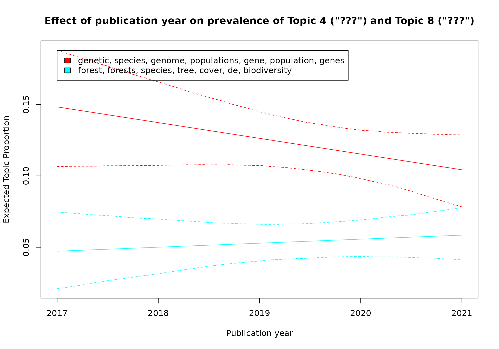
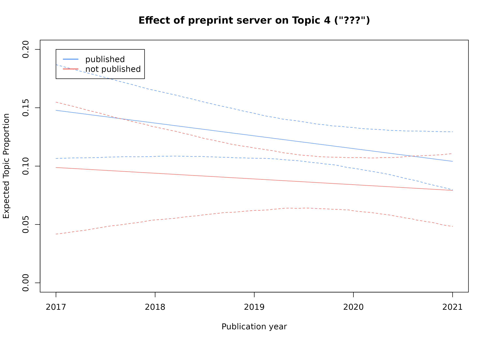
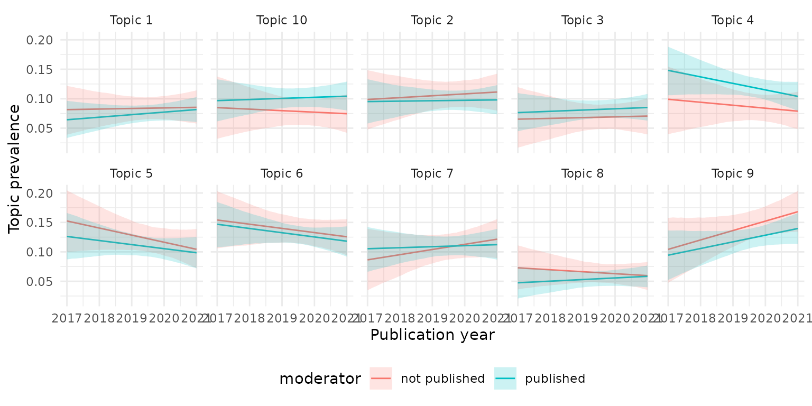

Exercise 1: Topic modeling biodiversity preprints
Source:vignettes/exercise1-biodiv.Rmd
exercise1-biodiv.RmdThis exercise follows the structure of the
vignette("covid-preprint-topics") and adapts it to create a
topic model for preprints referencing the term ‘biodiversity’
in either the preprint title or abstract. Refer back to the
vignette("covid-preprint-topics") for more information
about the individual steps.
Either try the steps yourself with the help of the example in the
vignette("covid-preprint-topics") or jump ahead to the
Solution section.
Exercise tasks
Getting the document data
We assume that you have created a local copy of the preprint data to
run this analysis (see information and code samples for “Getting the
document data” in
vignette("covid-preprint-topics")).
Cleaning, filtering and annotating the data
For this example we are planning to explore whether the publication status influences the topic prevalence. We therefore adapt the time range and consider preprints added from 2017 to 2021. We then reduce this to a subset of preprints that reference the term ‘biodiversity’ in either the preprint title or abstract.
# adapt based on the covid preprints examplePreparing and preprocessing the documents for text analysis
Topic modeling
Fitting the STM topic model
Fit an stm topic model with 10 topics to the prepared
data. The model should consider an interacting effect between the
covariates is_published and publication year
on topical prevalence. Apply a seed argument with the value
9868467.
# convert the DFM into stm format and run the stm() functionAnalysing and interpreting the topic model
Basic topic model information
Plot a model summary with the 7 most frequent words per topic.
# stm plot() teh topic model provides a summary of topic proportionsPrint a summary() of the topic model and explore the
sets of words that characterize the 10 topics.
# print a summary() of the topic modelUnderstanding and labeling topics
Create word clouds for all 10 topics using the 30 words with the highest probability per topic. Remove the term “biodiversity” from this display.
# word clouds are a useful first step to arrive at summary labels for topicsCovariate effects
Print the regression tables for all or selected topics.
# print a summary() of effectsPublication year
Use the stm plot method to create a plot that shows the
effect of publication year on topical prevalence for Topic
4 and Topic 8. Annotate with the most probable terms.
# stm plot offers various different plot options for covariate effectsAlternatively, the stminsights package could be used to
extract the same regression information from the stm
effects object and create customized charts.
# stminsights allows to get effects in a format suitable for ggplot2Publication status effect
We also incoporated the publication status into the model (covariate
is_published). Using the stm plot method
explore the effect of the treatment “published” on topical
prevalence.
# stm plot offers various different plotoptions for covariate effectsCompare the topical prevalence effect of covariate
is_published for Topic 4.
# stm plot offers various different plotoptions for covariate effectsCombination of publication status and publication year
Finally, we can also explore the combined effect of covariates; we
assumed an interacting effect of the two covariates
is_published and year. Using the
stm plot function explore the combined interacting
covariate effect for Topic 4.
Again, stminsights can be used to retrieve this
information and create customized visualizations for the combined
covariate effect.
# stminsights allows to get effects in a format suitable for ggplot2Solution
Getting the document data
We assume that you have created a local copy of the preprint data to
run this analysis (see information and code samples for “Getting the
document data” in
vignette("covid-preprint-topics")).
Cleaning, filtering and annotating the data
For this example we are planning to explore whether the publication status influences the topic prevalence. We therefore adapt the time range and consider preprints added from 2017 to 2021. We then reduce this to a subset of preprints that reference the term ‘biodiversity’ in either the preprint title or abstract.
library(dplyr)
library(stringr)
preprints_cleaned <- preprints_raw %>%
group_by(doi) %>%
filter(version == max(version)) %>%
ungroup() %>%
distinct(doi, .keep_all = TRUE)
preprints <- preprints_cleaned %>%
mutate(published = stringr::str_trim(published)) %>%
mutate(published = na_if(published, "NA")) %>%
mutate(is_published = as.numeric(!is.na(published))) %>%
mutate(is_published = case_when(is_published == 1 ~ "published",
is_published == 0 ~ "not published",
TRUE ~ "undefined")) %>%
mutate(year = lubridate::year(date)) %>%
filter(year >= 2017 & year <= 2021) %>%
select(doi, server, title, abstract, date, year, version, is_published)
keywords <- c("biodiversity")
search_pattern <- stringr::regex(paste(keywords, collapse = "|"),
ignore_case = TRUE)
biodiv_preprints <- preprints %>%
filter(stringr::str_detect(title, pattern = search_pattern) |
stringr::str_detect(abstract, pattern = search_pattern))Preparing and preprocessing the documents for text analysis
Filter terms and documents
Remove stopwords from the document-feature-matrix. Explore its properties.
pubs_dfm <- pubs_dfm %>%
quanteda::dfm_remove(pattern = quanteda::stopwords("english")) #%>%
#quanteda::dfm_wordstem()Filter tokens and documents by applying the same approach as in the Covid preprint example.
pubs_dfm <- pubs_dfm %>%
quanteda::dfm_remove(min_nchar = 2) %>%
quanteda::dfm_trim(min_docfreq = 2, docfreq_type = "count") %>%
quanteda::dfm_subset(quanteda::ntoken(.) > 4)Topic modeling
Fitting the STM topic model
Fit an stm topic model with 10 topics to the prepared
data. The model should consider an interacting effect between the
covariates is_published and publication year
on topical prevalence. Apply a seed argument with the value
9868467.
Estimating the effect of document covariates
Evaluate the effect of the previously chosen topic prevalence covariates on all topics.
biodiv_effect_K10 <- estimateEffect(1:10 ~ is_published * year,
stmobj = biodiv_model_K10,
metadata = biodiv_stm_docs$meta)This concludes fitting the model. The following sections step through a sample exploration of this topic model.
Analysing and interpreting the topic model
Basic topic model information
Plot a model summary with the 7 most frequent words per topic.
plot(biodiv_model_K10, n = 7)Print a summary() of the topic model and explore the
sets of words that characterize the 10 topics.
summary(biodiv_model_K10)
># A topic model with 10 topics, 1495 documents and a 8838 word dictionary.
># Topic 1 Top Words:
># Highest Prob: species, fish, marine, invasive, biodiversity, native, river
># FREX: coral, reefs, lakes, fisheries, reef, fishing, ocean
># Lift: advection, afdw, aggregations, aleutian, ampat, amphipods, andaman
># Score: fish, reef, islands, coral, fisheries, fishing, sea
># Topic 2 Top Words:
># Highest Prob: data, species, biodiversity, can, information, using, research
># FREX: user, users, automated, learning, databases, images, algorithms
># Lift: cheilostome, cnns, crux, digitized, disparities, dnn, echolocating
># Score: images, users, user, algorithms, pipeline, learning, students
># Topic 3 Top Words:
># Highest Prob: host, disease, biodiversity, populations, microbiota, human, infection
># FREX: infection, pathogen, virus, viruses, viral, diseases, infections
># Lift: antimicrobial, antimicrobials, attack, auxiliary, baits, brain, brood
># Score: infection, disease, host, pathogen, gut, microbiota, virus
># Topic 4 Top Words:
># Highest Prob: genetic, species, genome, populations, gene, population, genes
># FREX: snp, alleles, introgression, genome, genomic, genetic, genomes
># Lift: 3a, admixed, angustifolia, antibacterial, aureus, beak, beast
># Score: genome, genetic, genes, genomes, genomic, gene, speciation
># Topic 5 Top Words:
># Highest Prob: species, model, biodiversity, can, ecological, models, dynamics
># FREX: coexistence, competitive, theory, simulations, competition, stability, empirical
># Lift: abandon, absences, accumulates, aggressively, anchovy, archosaurs, assumes
># Score: competitive, theory, coexistence, competition, stability, simulations, preemption
># Topic 6 Top Words:
># Highest Prob: species, diversity, biodiversity, change, richness, climate, across
># FREX: climatic, gradients, biotic, turnover, climate, scales, richness
># Lift: arabia, bioregions, bryophyte, constantly, divide, endotherms, equivalence
># Score: richness, climate, elevational, phylogenetic, zeta, ldg, gradients
># Topic 7 Top Words:
># Highest Prob: plant, soil, diversity, communities, microbial, community, species
># FREX: mixtures, fire, soil, aboveground, amf, nitrogen, plant
># Lift: biodiv, conditioned, decomposer, exudate, fertilisation, microclimate, microsite
># Score: soil, microbial, grazing, bacterial, amf, mixtures, crop
># Topic 8 Top Words:
># Highest Prob: forest, forests, species, tree, cover, de, biodiversity
># FREX: forest, forests, en, de, plantations, la, es
># Lift: como, diversidad, landcover, que, una, vegetable, acacia
># Score: forest, forests, la, que, de, las, plantations
># Topic 9 Top Words:
># Highest Prob: conservation, species, biodiversity, areas, land, use, management
># FREX: iucn, socio, protected, lands, pas, conservation, nations
># Lift: eu, herpetofauna, pas, 30x30, abroad, accessing, achievements
># Score: protected, land, pas, iucn, lands, natura, conservation
># Topic 10 Top Words:
># Highest Prob: dna, edna, samples, species, metabarcoding, biodiversity, diversity
># FREX: edna, metabarcoding, samples, dna, primer, coi, biomonitoring
># Lift: 1the, acuta, asv, battery, benthos, bony, bruv
># Score: edna, metabarcoding, dna, samples, primer, coi, cristatusUnderstanding and labeling topics
Create word clouds for all 10 topics using the 30 words with the highest probability per topic. Remove the term “biodiversity” from this display.
library(tidyr)
library(tibble)
# get the top FREX words
frex_top20 <- as.data.frame(labelTopics(biodiv_model_K10, n = 25)$frex) %>%
rownames_to_column(var = "topic") %>%
pivot_longer(starts_with("V"), values_to = "term") %>%
mutate(is_frex = 1) %>%
select(-name)
topic_words <- tidytext::tidy(biodiv_model_K10, matrix = "beta") %>%
#filter(!(term %in% c("sars", "cov", "covid"))) %>%
mutate(topic = as.character(topic)) %>%
group_by(topic) %>%
arrange(-beta) %>%
slice_head(n = 30) %>%
mutate(beta_norm = (beta - min(beta)) / (max(beta) - min(beta))) %>%
ungroup() %>%
left_join(frex_top20, by = c("topic", "term")) %>%
mutate(is_frex = ifelse(is.na(is_frex), "0", "1")) %>%
filter(!(term %in% c("biodiversity"))) %>%
mutate(topic = paste("Topic", topic))
ggplot(topic_words, aes(label = term, size = beta_norm, color = is_frex)) +
ggwordcloud::geom_text_wordcloud_area(shape = "square",
family = "Arial",
rm_outside = TRUE) +
scale_radius(range = c(4, 15)) +
scale_color_manual(values = c("0" = "black", "1" = "#D55E00")) +
facet_wrap(~topic, ncol = 5)Word clouds showing the 30 most probable terms per topic.
Covariate effects
Print the regression tables for all or selected topics.
summary(biodiv_effect_K10)
>#
># Call:
># estimateEffect(formula = 1:10 ~ is_published * year, stmobj = biodiv_model_K10,
># metadata = biodiv_stm_docs$meta)
>#
>#
># Topic 1:
>#
># Coefficients:
># Estimate Std. Error t value Pr(>|t|)
># (Intercept) -1.6741491 15.1093766 -0.111 0.912
># is_publishedpublished -7.0738432 19.4059974 -0.365 0.716
># year 0.0008706 0.0074813 0.116 0.907
># is_publishedpublished:year 0.0034983 0.0096085 0.364 0.716
>#
>#
># Topic 2:
>#
># Coefficients:
># Estimate Std. Error t value Pr(>|t|)
># (Intercept) -5.804916 17.529779 -0.331 0.741
># is_publishedpublished 4.614834 23.154506 0.199 0.842
># year 0.002927 0.008679 0.337 0.736
># is_publishedpublished:year -0.002290 0.011464 -0.200 0.842
>#
>#
># Topic 3:
>#
># Coefficients:
># Estimate Std. Error t value Pr(>|t|)
># (Intercept) -1.8870266 18.0104321 -0.105 0.917
># is_publishedpublished -2.2533465 22.7403975 -0.099 0.921
># year 0.0009683 0.0089173 0.109 0.914
># is_publishedpublished:year 0.0011224 0.0112595 0.100 0.921
>#
>#
># Topic 4:
>#
># Coefficients:
># Estimate Std. Error t value Pr(>|t|)
># (Intercept) 10.185198 19.263883 0.529 0.597
># is_publishedpublished 11.985349 23.718983 0.505 0.613
># year -0.005000 0.009538 -0.524 0.600
># is_publishedpublished:year -0.005918 0.011744 -0.504 0.614
>#
>#
># Topic 5:
>#
># Coefficients:
># Estimate Std. Error t value Pr(>|t|)
># (Intercept) 24.321375 18.642413 1.305 0.192
># is_publishedpublished -10.432309 23.638078 -0.441 0.659
># year -0.011983 0.009230 -1.298 0.194
># is_publishedpublished:year 0.005159 0.011704 0.441 0.659
>#
>#
># Topic 6:
>#
># Coefficients:
># Estimate Std. Error t value Pr(>|t|)
># (Intercept) 14.3230768 17.3420440 0.826 0.409
># is_publishedpublished 0.3822469 22.2861426 0.017 0.986
># year -0.0070247 0.0085865 -0.818 0.413
># is_publishedpublished:year -0.0001932 0.0110347 -0.018 0.986
>#
>#
># Topic 7:
>#
># Coefficients:
># Estimate Std. Error t value Pr(>|t|)
># (Intercept) -17.907032 18.715678 -0.957 0.339
># is_publishedpublished 14.028995 23.085770 0.608 0.543
># year 0.008921 0.009267 0.963 0.336
># is_publishedpublished:year -0.006946 0.011431 -0.608 0.544
>#
>#
># Topic 8:
>#
># Coefficients:
># Estimate Std. Error t value Pr(>|t|)
># (Intercept) 6.752287 12.723635 0.531 0.596
># is_publishedpublished -12.271939 15.989471 -0.768 0.443
># year -0.003312 0.006300 -0.526 0.599
># is_publishedpublished:year 0.006072 0.007917 0.767 0.443
>#
>#
># Topic 9:
>#
># Coefficients:
># Estimate Std. Error t value Pr(>|t|)
># (Intercept) -32.047082 19.468412 -1.646 0.1000 .
># is_publishedpublished 9.713953 25.496311 0.381 0.7033
># year 0.015940 0.009639 1.654 0.0984 .
># is_publishedpublished:year -0.004821 0.012624 -0.382 0.7026
># ---
># Signif. codes: 0 '***' 0.001 '**' 0.01 '*' 0.05 '.' 0.1 ' ' 1
>#
>#
># Topic 10:
>#
># Coefficients:
># Estimate Std. Error t value Pr(>|t|)
># (Intercept) 5.495896 18.222081 0.302 0.763
># is_publishedpublished -9.392372 21.664020 -0.434 0.665
># year -0.002683 0.009022 -0.297 0.766
># is_publishedpublished:year 0.004663 0.010727 0.435 0.664Publication year
Use the stm plot method to create a plot that shows the
effect of publication year on topical prevalence for Topic
4 and Topic 8. Annotate with the most probable terms.
plot(biodiv_effect_K10,
covariate = "year",
method = "continuous",
model = biodiv_model_K10,
topics = c(4, 8),
xaxt = "n",
main = 'Effect of publication year on prevalence of Topic 4 ("???") and Topic 8 ("???")',
labeltype = "prob",
xlab = "Publication year")
axis(1, at = c("2017","2018","2019","2020", "2021"), labels = c(2017, 2018, 2019, 2020, 2021))
Alternatively, the stminsights package could be used to
extract the same regression information from the stm
effects object and create customized charts.
library(stminsights)
year_effect <- get_effects(estimates = biodiv_effect_K10,
variable = "year",
type = "continuous")
year_effect %>%
mutate(topic = as.character(topic)) %>%
mutate(topic = paste("Topic", topic)) %>%
ggplot(aes(x = value, y = proportion)) +
geom_line() +
geom_ribbon(aes(ymin = lower, ymax = upper),
alpha = 0.2, linetype = 0) +
xlab("Publication year") +
ylab("Topic prevalence") +
facet_wrap(~topic, ncol = 5) +
theme_minimal()
Publication status effect
We also incoporated the publication status into the model (covariate
is_published). Using the stm plot method
explore the effect of the treatment “published” on topical
prevalence.
plot(biodiv_effect_K10,
covariate = "is_published",
#topics = c(9, 10, 16, 1),
model = biodiv_model_K10,
method = "difference",
cov.value1 = "published", cov.value2 = "not published",
xlab = "higher prevalence in unpublished ... higher prevalence in published",
#xlim = c(-0.19, 0.1),
#labeltype = "prob",
main = "Effect of preprint server (treatment 'published')")Compare the topical prevalence effect of covariate
is_published for Topic 4.
Combination of publication status and publication year
Finally, we can also explore the combined effect of covariates; we
assumed an interacting effect of the two covariates
is_published and year. Using the
stm plot function explore the combined interacting
covariate effect for Topic 4.

Again, stminsights can be used to retrieve this
information and create customized visualizations for the combined
covariate effect.
published_effect <- get_effects(biodiv_effect_K10,
variable = "year", type = "continuous",
moderator = "is_published", modval = "published")
unpublished_effect <- get_effects(biodiv_effect_K10,
variable = "year", type = "continuous",
moderator = "is_published", modval = "not published")
is_published_effects <- bind_rows(published_effect, unpublished_effect)
is_published_effects %>%
mutate(topic = as.character(topic)) %>%
mutate(topic = paste("Topic", topic)) %>%
ggplot(aes(x = value, y = proportion, color = moderator,
group = moderator, fill = moderator)) +
geom_line() +
geom_ribbon(aes(ymin = lower, ymax = upper,
fill = moderator), alpha = 0.2, linetype = 0) +
xlab("Publication year") +
ylab("Topic prevalence") +
facet_wrap(~topic, ncol = 5) +
theme_minimal() +
theme(legend.position = "bottom") 